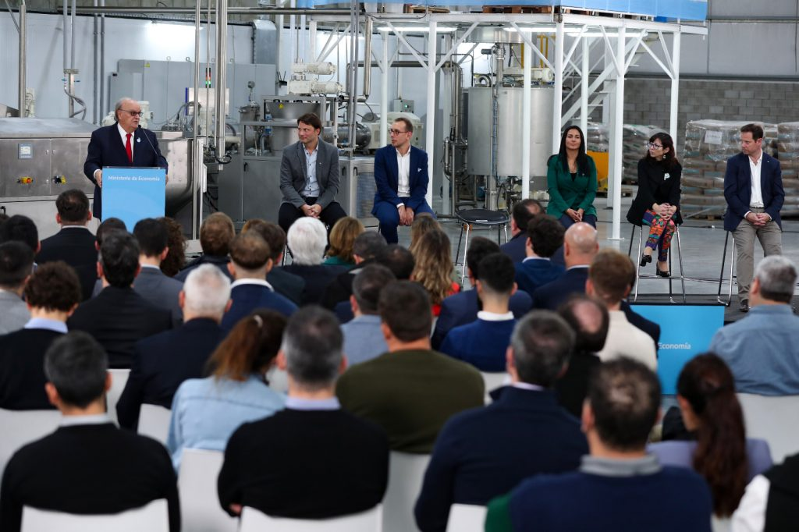
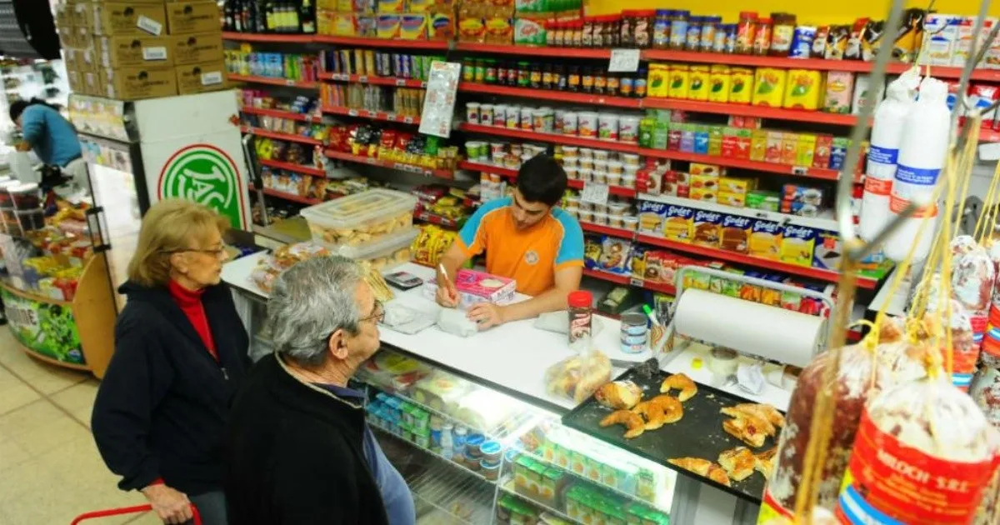

Dólar hoy: a cuánto cotizan el oficial y sus diferentes tipos de cambio este viernes 23 de junio

El dólar oficial cotiza este viernes 23 de junio a $252.20 para la compra y $262.99 para la venta en las entidades bancarias.
En cuanto al dólar blue, esta jornada cotiza a $488.00 para la compra y $493.00 para la venta. Así, marca una brecha de 93% con respecto al dólar oficial. El valor del dólar blue tiene una diferencia sustancial con el dólar oficial, que se adquiere en los bancos y que posee una cotización establecida.
Por otro lado, el dólar turista (también conocido como dólar solidario) cotiza a $496.00. Este valor es el que se utiliza al momento de comprar dólar para ahorro o de realizar transacciones en el exterior y surge de la suma de un 30% al valor del dólar oficial del día.
Otro de los tipos de cambio es el dólar mayorista, el cual inicia el día a $488 para la compra y $493 para la venta.
En relación al Contado con liqui (CCL), el precio de referencia es de $485.88. El CCL es la operatoria que permite a las empresas comprar papeles argentinos en el mercado local y venderlos en el exterior para lograr así girar divisas para "atesoramiento".
Cuántos tipos de dólar hay en Argentina
Hoy en Argentina conviven al menos seis tipos de cotizaciones distintas para la moneda estadounidense, algunas más usadas que otras.Dólar ahorro/tarjeta o dólar turista/solidario: tiene el recargo del 30% dispuesto por el Gobierno sobre las compras realizadas con tarjeta en moneda extranjera y sobre la adquisición de divisas para atesoramiento dentro del circuito oficial.
Dólar blue: es el billete que se vende en el mercado informal, a través de cuevas o “arbolitos” en la calle.
Contado con Liqui: es una operación legal para conseguir dólares en el exterior. Se convirtió en el camino preferido de las empresas. Se compran títulos o acciones argentinas en pesos y luego se venden en el exterior en dólares.
Dólar oficial o minorista: es el precio al que pueden acceder los particulares pero siempre dentro del cerco de US$200 establecido por el cepo.
Dólar mayorista: es el que se usa para el comercio exterior, el pago de deudas dolarizadas y de dividendos. Teóricamente es el que incide en la fijación de los precios de los productos importados.
Dólar para industria y servicios: por el efecto de las retenciones, los exportadores de manufacturas y de servicios reciben en realidad un dólar a un valor más bajo que el oficial, y mucho más bajo que el blue. Dentro de esta categoría, hay distintos valores para quienes exportan carne y lácteos, para trigo, maíz y girasol y para la soja.
Sigue la sangría de divisas: el Banco Central vendió US$ 125 millones y el contado con liqui escaló a $ 519
El dólar blue cerró a $ 495.
Sin señales claras de parte del Fondo Monetario, la sangría de divisas
sigue golpeando sobre la economía. Este viernes el Banco Central tuvo que
vender US$ 125 millones para cubrir la demanda del mercado y en lo que va
de junio ya se deshizo de US$ 545 millones.
En una jornada cruzada por versiones acerca de la posible salida de Sergio
Massa del ministerio de Economía después de que el kirchnerismo lo dejara afuera
de la carrera presidencial, los dólares financieros arrancaron la rueda en alza.
El dólar MEP llegó a tocar los 487 pesos y luego retrocedió a $ 481, un aumento
de 0,1% en el día, mientras el contado con liqui se estiró a $ 519,9 pesos, la
cotización nominal más alta alcanzada hasta ahora.
Con esto, el contado con liqui, la vía por la que se dolarizan las empresas,
trepó 1,7% en el día y saltó 51% en el año. Así se pone a tiro de la inflación
que sumaba 42,2% hasta mayo y podría estirarse a 50% con los aumentos de junio.
De esta forma, el contado con liqui es el dólar que más se encareció lo que
va del 2023, seguido por el MEP que subió 47%
Más atrás quedó el dólar blue, que subió dos pesos este viernes y cerró esta
semana en $ 495, un alza del 43% en el año, a la par del tipo de cambio
mayorista que se expandió 42,8%.
En medio de la suba de los dólares alternativos y de los rumores de la salida
de Massa, que por la tarde fue desmentida desde el Palacio de Hacienda, el Central
vendió US$ 125 millones. El operador Gustavo Quintana señaló las ventas se potenciaron
porque "según fuentes del mercado hoy se acumularon pagos de importaciones en yuanes,
demorados por feriados en China durante la semana".
Así, las reservas siguen bajando, sin que termine de disiparse la incertidumbre
acerca de lo que ocurrirá con el FMI. El Gobierno postergó los vencimientos de
US$ 2700 millones de esta semana para la semana próxima, pero aún no hay fecha
cierta para que el organismos internacional entregue los desembolsos pendientes.
En este clima las acciones argentinas tuvieron una tenue recuperación tras el freno
del jueves, cuando habían metido una pausa en la remontada que traccionan desde hace
semanas ante las perspectiva de que haya un cambio de gobierno. El Merval subió 1,3%
y en Nueva York los ADR se estiraron hasta 6%, con IRSA a la cabeza.
GMA Capital detalla que en lo que va del mes, las acciones escalaron 16% en dólares,
mientras que los bonos soberanos treparon entre 15% y 20%. "El resultado favorable
de los títulos de deuda se explica en gran medida por la performance de la última
semana: los Bonares mejoraron en promedio 8,7%, destacándose el AL30 que se
revalorizó 12% en moneda dura".
"En temporada alta de “trade electoral” encontramos que las acciones acumularon en el
año una ganancia de 39,5% en dólares, una cifra que deposita a 2023 como en el top 3 de
performances en años con comicios", sostuvieron.
Ezequiel Baigorria, de la entidad financiera Reva, apunta que el rally que vienen
mostrando los activos argentinos podría continuar.
"El rally se da en activos que estaban muy devaluados y en empresas con balances
dolarizados, como Pampa Energía, IRSA e YPF. Y en lo que es renta fija, como bonos
y obligaciones negociables, hay mucho volumen en todo lo que es bonos indexados a la inflación",
señala Baigorria.
"Los bonos soberanos como el AL30 o el GD30 vienen subiendo fuerte porque a nivel paridad
cambiaria están bajos, alrededor de 25 dólares. Con un default calculado pagarían US$ 32
contra US$ 25 que cotizan. Además son dos bonos que se usan mucho con el dólar MEP y
eso hace que suban", detalla Baigorria.
"También se están dando un montón de factores vinculados con el FMI y las elecciones que hacen que el mercado se vaya posicionando de cara a las expectativas de lo que va a venir. El mercado toma posesión desde ahora y no un día antes de los comicios", remarca.
Allanaron una vivienda en barrio Echesortu en un caso de delitos económicos
Secuestraron documentación con inversiones inmobiliarias realizadas mediante fideicomisos constituidos en Argentina y en Paraguay, como así también referente a inversiones en el mercado de capitales, una pick up 4x4 de alta gama, una notebook y dos teléfonos celulares.
La Brigada de Delitos Económicos de la Agencia de Investigación Criminal realizó un allanamiento por una causa de administración fraudulenta, en la cual interviene el área económica de la Agencia de Criminalidad organizada y Delitos complejos de la segunda circunscripción de Rosario a cargo del doctor Miguel Moreno.
El allanamiento se hizo en una vivienda de calle Marcos Paz al 3900 de la ciudad, donde secuestraron documentación con inversiones inmobiliarias realizadas mediante fideicomisos constituidos en Argentina y en Paraguay, como así también referente a inversiones en el mercado de capitales, una pick up 4×4 de alta gama, una notebook y dos teléfonos celulares.
Los efectivos de AIC llevan adelante una investigación por una maniobra de trasvasamiento de una empresa, de la cual no se descarta la presentación de otros damnificados.
Por fuerte demanda de las pymes, Economía duplica el financiamiento al sector productivo

Mendiguren anunció que el programa Crédito Argentino (CreAr) aumenta a 1 billón de pesos para impulsar sectores estratégicos.
secretario de Industria y Desarrollo Productivo, José Ignacio de Mendiguren, anunció la ampliación del programa Crédito Argentino (CreAr) que ahora alcanza un total de un billón de pesos disponibles para crédito productivo. La medida, que impulsa a aquellos sectores estratégicos que acompañen el cambio de la estructura productiva, se presentó en la planta de La Dolce, firma que exporta a países limítrofes y España, y que, con la asistencia de CreAr, está reemplazando importaciones y proyecta aumentar sus exportaciones y contratar más personal.
“No cabe ninguna duda de que nuestra política económica abraza a la producción y no a la especulación financiera”, resaltó Mendiguren y subrayó: “El ministro de Economía Sergio Massa se propuso estabilizar la economía y sostener la atividad productiva y el nivel de empleo. Y pese a las dificultades, nunca abandonamos ese camino”.
En este sentido, resaltó que “con CreAr ordenamos la oferta financiera, con criterio federal, trabajando codo a codo con la banca pública y privada. Pusimos a disposición los recursos para todos aquellos que tenían necesidad de fondos para la inversión, y las líneas de créditos se agotaron, desde aquellas que se destinan a los emprendedores hasta las grandes empresas con proyectos estratégicos. Todas son fundamentales para cambiar la estructura productiva de Argentina”.
Por último, explicó que “lo que estamos anunciando no es sólo la ampliación de una línea de créditos sino la definición de una política de Estado, de una política industrial. Hoy estamos en la víspera de una gran Argentina, depende de nosotros si nos vamos a instalar desde la visión de la especulación financiera o desde la visión de la Argentina productiva, competitiva, que nos asegure el desarrollo nacional”.
Durante la presentación, estuvieron presentes la presidenta del Banco de la Nación Argentina, Silvina Batakis; el presidente del Banco Argentino de Desarrollo BICE, Mariano de Miguel; la intendenta de Malvinas Argentinas, Noelia Correa; el subsecretario de la Pequeña y Mediana Empresa, Tomás Canosa; y las diputadas nacionales, Carolina Arricau y Alicia Aparicio, entre otras autoridades.
Crédito Argentino (CreAr), el programa de financiamiento a la inversión más grande de la historia reciente del país, se puso en marcha a fines del año pasado con un presupuesto inicial de $500 mil millones. Esta nueva inversión, que duplica el monto original, responde a la alta demanda de los distintos sectores productivos.
Entre las líneas que vieron ampliado su cupo por el fuerte requerimiento productivo se encuentran las destinadas a inversión PyME junto con el Banco Nación y el Banco Argentino de Desarrollo BICE. La línea del BNA contó con un cupo original de $20 mil millones que ahora fue ampliado a $100 mil millones mientras que la del BICE partió de un cupo inicial de $10 mil millones que, producto de la demanda y los buenos resultados, ahora fue incrementada a $50 mil millones.
Desde su lanzamiento, CreAr otorgó créditos a PyMEs de todo el país. El 62% se destinó a proyectos fuera del AMBA, lo que permite consolidar la federalización del crédito. A su vez, el programa impulsa la generación de empleo y potencia las exportaciones, ya que el 65% de las empresas que recibieron financiamiento aumentaron su planta de empleo y más del 20% exportó su producción en 2022.
El programa también busca garantizar la inclusión financiera, a través del otorgamiento de garantías del Estado Nacional. En marzo de este año el número de créditos aumentó en términos reales con respecto a febrero, mientras que el sistema financiero registra una morosidad de solo el 3,5%.
El esquema de financiamiento de CreAr promueve que todo el entramado productivo que quiera llevar adelante un proyecto de inversión tenga una línea a disposición con una tasa competitiva y compatible con la actividad productiva. El programa incluye líneas con bancos públicos y privados, como BNA, BICE o Banco de la Provincia de Buenos Aires, con bancos provinciales o créditos directos, y líneas especialmente diseñadas para MiPYMEs, medianas y grandes empresas, sustitución de importaciones, sectores estratégicos, ampliación de exportaciones, o adquisición de bienes de capital a través de leasing, entre otras.
“Los protagonistas de CreAr son los empresarios y empresarias con los que trabajamos cotidianamente para poner todas las herramientas a disposición para el entramado productivo PyME”, sostuvo Canosa, y destacó el “trabajo activo y articulado con la banca pública nacional, con las bancas provinciales, las privadas, que completamos a través de las garantías, porque necesitamos créditos a tasas competitivas y que cada vez lleguen a más PyMEs. Y todo esto se cristaliza en los resultados: más y más empresas solicitan los créditos porque están ávidos de invertir y concretar sus proyectos”.
En el acto, las autoridades anunciaron también la puesta en marcha de la nueva convocatoria de la línea CreAr Crédito Directo del Fondo Nacional de Desarrollo Productivo (FONDEP), una iniciativa que ofrece financiamiento no bancario de hasta $60 millones a inversiones productivas orientadas exclusivamente hacia las micro y pequeñas empresas. En esta nueva etapa, la línea ofrece mayores facilidades de acceso, ya que incorpora el Legajo Único Financiero Económico (LUFE), una herramienta que disminuye considerablemente la carga de información para las PyMEs con el objetivo de hacer más eficiente el proceso.
Tras los anuncios, las autoridades recorrieron la planta de La Dolce, que con la línea CreAr para proyectos estratégicos de la Secretaría de Industria y Desarrollo Productivo y del Banco de la Nación Argentina incorporó una nueva línea de producción para elaborar golosinas y hacer extrusados de frutas según los últimos estándares del mercado internacional.
“La Dolce es una empresa que tiene 40 años en el mercado que comenzó como un quiosquito en el barrio de Chacarita. Hoy nos encuentra con nuevos proyectos, pronto pondremos en funcionamiento esta línea de producción para extrusado de frutas, un producto que hasta ahora se importaba. Hace 7 u 8 años apostamos al malvavisco y hoy comenzamos a producir una nueva golosina con la que planificamos salir a los mercados para empezar a generar divisas que es lo que todos los industriales necesitamos”, aseguró su socio director, Leonardo Romano.
“Esta línea la compramos gracias a un certificado de la Subsecretaría PyME, con un crédito del FONDEP. Sin el apoyo gubernamental como del Banco Nación, para nosotros hubiera sido imposible acceder a esta tecnología de punta a nivel mundial que hoy ponemos en marcha. Somos una PYME familiar que apuesta al país, al crecimiento y a las exportaciones”, concluyó Romano.
Por la inflación, caen las ventas minoristas por quinto mes consecutivo
Las mediciones continúan en terreno negativo en las comparaciones mensuales e interanuales. Solo uno de los rubros se salva de la baja
Los precios en los comercios de cercanía complican las ventasLos precios en los comercios de cercanía complican las ventas
Las ventas minoristas pymes registraron un nuevo retroceso en mayo, que alcanzó el 2,8 por ciento frente a igual mes del año pasado, medidas a precios constantes y se convirtió en la mayor caída del año. De esta manera, la racha negativa acumula cinco meses de manera consecutiva, de acuerdo al relevamiento elaborado por la Confederación Argentina de la Mediana Empresa (CAME).
El Índice de Ventas Minoristas Pymes reveló que las ventas acumulan un declive del 1,7 por ciento en los primeros cinco meses del año, respecto al mismo periodo de 2022. En tanto, en la comparación mensual, los negocios también vendieron 1,2 por ciento menos que en abril. Desde CAME advirtieron que "el sector comercial viene sintiendo cada vez más la pérdida de poder adquisitivo de las familias en manos de la inflación" y señalaron que "desde todos los negocios relevados manifestaron que recibieron productos con subas importantes de precios".
La entidad gremial-empresaria también remarcó que "el 56 por ciento tuvo problemas para reponer stock porque los proveedores demoraron entregas o directamente las cancelaron, según manifestaron en el sondeo".
Qué rubros tuvieron mayores caídas
En mayo, de los siete rubros medidos, seis cayeron en la comparación anual y solo uno creció. Mientras que en lo que va del año, cinco sectores acumulan caídas y solo dos aumentos. El único rubro con crecimiento anual en mayo fue Farmacias (+6,4%), y entre los ramos en baja, el de mayor retracción fue Indumentaria y textil (-8,2%). Para el acumulado anual, se mantienen en alza Farmacias (+6,8%) y Ferreterías, materiales eléctricos y de la construcción (+0,5).
El resto, todos están abajo del periodo enero-mayo de 2022, siempre medidos a precios constantes.
Rendimiento de cada rubro

-Alimentos y bebidas: las ventas disminuyeron 4,2% anual en mayo, a precios reales, y suman una merma del 1,9% en los primeros cinco meses del año (frente al mismo periodo de 2022). En la comparación mensual, bajaron 0,7%.
-Bazar, decoración, textiles para el hogar y muebles: las ventas bajaron 2% anual, siempre a precios reales, y 0,2% en el contraste mensual. Para los primeros cinco meses del año llevan un retroceso del 2% frente al mismo periodo de 2022.
-Calzado y marroquinería: las ventas cayeron 1,4% anual en mayo, a precios reales y 3,4% en relación al mes anterior. En los primeros cinco meses del 2023, la declinación es de 0,3% frente a los mismos meses de 2022.
-Farmacia: las ventas en abril se incrementaron 6,4% anual y 0,8% mensual, a precios constantes. En los primeros cinco meses del año llevan un aumento interanual de 6,8%.
-Perfumería: en mayo, a precios reales, las ventas se achicaron un 2,2% anual, un 2,1% mensual, y 1,5% en los primeros cinco meses de año, frente a iguales meses de 2022.
-Ferretería, materiales eléctricos y materiales de la construcción: en mayo, a precios reales, las ventas descendieron 1,8% anual y 3,7% mensual, pero subieron 0,5% en el acumulado de los primeros cinco meses del año, frente a los mismos meses del 2022.
-Textil e indumentaria: las ventas se desplomaron un 8,2% anual en mayo, y 0,8% en la comparación mensual. Para los primeros cinco meses del año acumulan una caída del 9% anualizada.